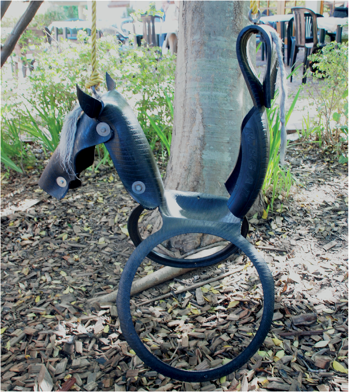
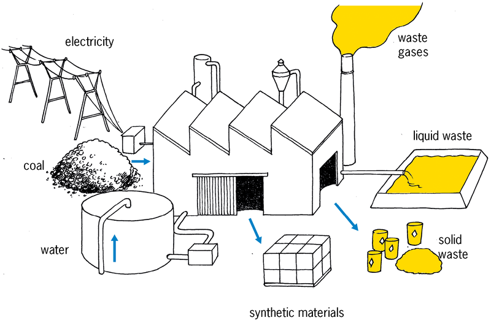
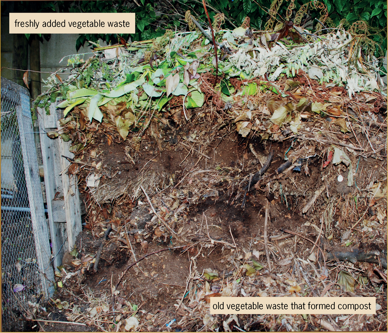
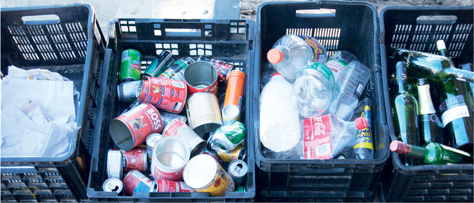
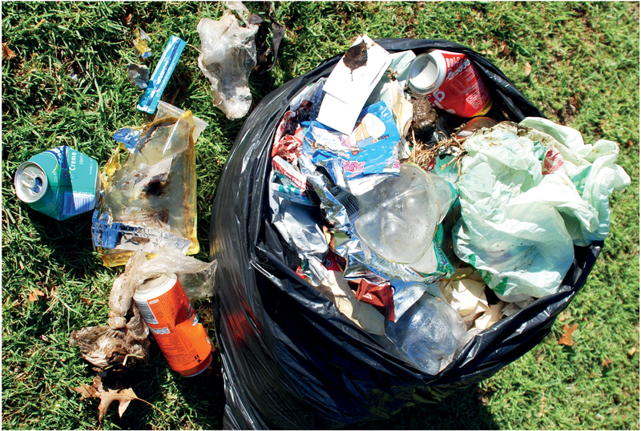
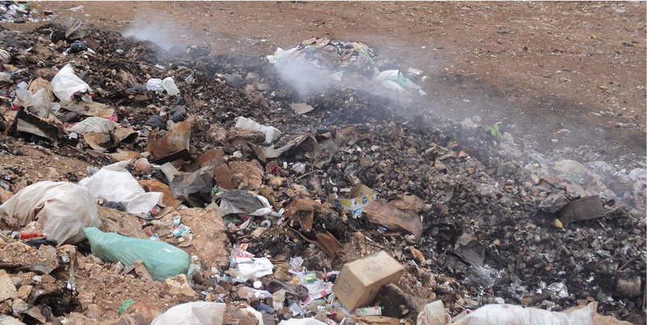
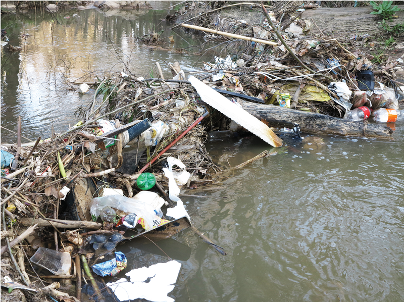
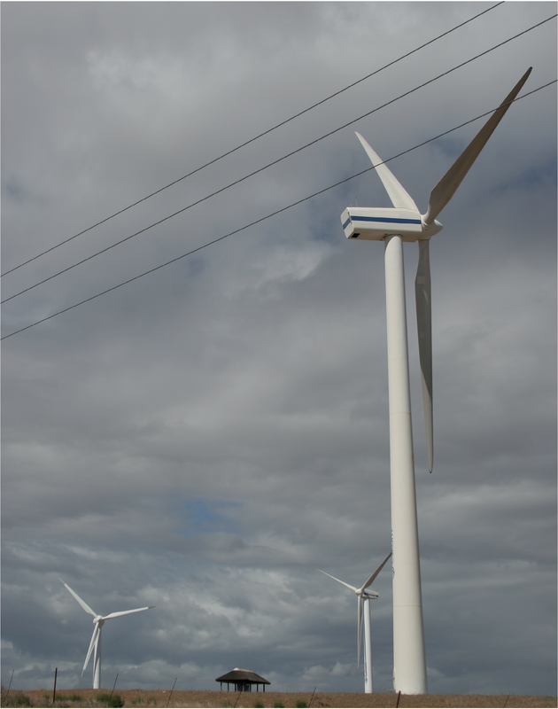

The impact of technology on society and the environment
In this
chapter, you will learn how plastic waste damages the
environment. Then you will learn how this negative impact can
be reduced.
Figure 1: What is this swing made of?
Many years ago, people could only use
the materials that they found in the natural environment. This means
all of the natural things that are around us. It includes air,
water, soil, plants and animals. Some examples of natural
materials are wood, leather, clay and grass.
Today, people use many new materials
that are not found in the natural environment. These materials
are made in factories. They are often made from oil or coal
that are found under ground. This includes materials like
plastic, certain paints, and certain fabrics used to make
clothes. You may have heard of "polyester clothes", "PVA paint"
and "neoprene rubber". These are called synthetic materials.
Synthetic materials have many
advantages. They are often more durable, lighter and cheaper
than natural materials. Something is durable if it lasts for a
long time.
But synthetic materials also have
disadvantages. When they are thrown away, the waste lasts a
long time. Therefore, it is better to use synthetic materials
over and over again. This is called reusing materials.
Because synthetic materials are
cheap, people can afford to buy more things that they want. One
of the easiest ways to reduce the disadvantages of synthetic
materials is to buy fewer things. This is called reducing consumption. Before you
buy something new, ask yourself if you really need it.
There is another disadvantage to
synthetic materials that most people do not see. Harmful waste
is often formed at the factories where the synthetic materials
are made. This waste can end up in the air, the water and the
soil. Modern factories are designed better than older factories
so that they release less harmful waste into the
environment.
Figure 2: Waste released by a factory
One good
idea is to keep waste of synthetic materials separate from
waste of natural materials. This is called waste separation.
Waste of
natural materials is broken down in the natural environment to
form harmless substances like compost. Some natural materials
break up into harmless substances simply when they lie in the
sun or in water for some time.
A
material is called biodegradable if natural
processes can break the material into small harmless
pieces.
Materials
that cannot break down naturally into harmless substances are
called non-biodegradable materials.
Many people throw all their
fruit and vegetable peels on a compost heap. They also throw
dead leaves, small tree branches and cut grass on it.
Over a few months, the waste on the
compost heap changes into small dark pieces that feel like
soft soil. This is called compost or humus. Compost is a
valuable material, because plants grow better in soil that
contains a lot of compost.
A compost heap should be kept wet,
warm and filled with air. You can do this by covering the
heap with a plastic sheet, and mixing the compost once a
week.
Figure 3: A compost heap
What are things made of?
Look around you at the following
objects in your classroom. For each object, do the
following:
Write down what you think
this type of object was made of hundreds of years ago, before
there were synthetic materials.
Write down what this object
is made of today.
Object
What
was it made of hundreds of years ago?
What is
it made of today?
Shirt
Hint: Look at the label inside your
school shirt.
Jersey
Hint: Look at the label inside your
school jersey.
Pen
Something to write on
Hint: What did the Egyptians write on?
What did the Khoisan draw on?
Pencil case
Paint
Roof
School bag
After you have
completed the table, discuss your answers with the learner
sitting next to you.
Homework for the next lesson
You need to do
these exercises to be able to answer the questions in the next
lesson.
Look at the
contents of dustbins and garbage bags. Make a list of all the
solid materials in the waste.
Stand in street near your home. Look around you, without
walking to another position. Count how many plastic bags you
can see. Go to a different street and do the same again. Then
complete the table below.
Number of plastic bags you can
see
Street A
Street B
Look at plastic
bags lying around outside that still look new.
Also look at plastic
bags lying around outside that look old.
Why do some plastic
bags look new and others old? What made the old ones look that
way?
Look at new and old
pieces of materials made from plants that are lying around,
such as wood, cut grass, paper and cardboard. How do the newer
pieces of this waste differ from those that have been lying
around for a long time?
How do you throw your waste away?
It is good for the
environment if you put different kinds of waste in different
garbage bags or boxes. This is called waste separation. For example,
if you put all your glass waste into a box, then that glass
can be taken by a waste collector to a factory that makes new
glass bottles out of old glass. This is much better than if
the old glass lies on a rubbish heap. We say that glass can
be recycled. You will learn more about recycling next
week.
Figure 4: The weekly waste from a household that separates waste Figure 5: The weekly waste from a household that does not separate waste
What happens to things that are thrown away?
Discuss in groups of three or four
To answer these questions, think back
to the homework exercises you did.
What are the
differences between waste materials that have been lying
outside for a long time and those that have been there for a
short time?
Which types of
materials changed a lot with time? And which types of materials
did not?
Do some
materials change more with time than others?
What do you
think will happen to plastic bags that lie in the environment
for more than 10 years, or 100 years, or 1 000 years?
Do the plastic
bags that are thrown away as waste just get more and more? Or
do they biodegrade? Or do they go somewhere else?
Different properties of different materials
Siphosethu uses a paper bag to carry her shopping.
Brandon uses a plastic bag.
Thabang uses a leather bag.
They all reuse their bags, but all of
their bags break after some time.
Answer the following questions for each
type of bag on your own.
What
will happen to the bag when it gets wet?
Paper bag
Plastic bag
Leather bag
Do
you need to care for the bag in some way so that it will last
longer?
Paper bag
Plastic bag
Leather bag
Can
the bag be fixed when it breaks? If yes, then how?
Paper bag
Plastic bag
Leather bag
What will happen to
the bag if it is thrown away with other waste like rotting
food? Where will the bag end up? What will happen to it
there?
Paper bag
Plastic bag
Leather bag
Homework
Think about a place where garbage is
burned. You may have seen places like this.
Figure 6: A burning garbage dump
What does the
ground look like?
What does the air
look like?
What does it smell
like?
How can you stop people from throwing plastic bags away?
Case study: the negative impact of plastic shopping bags on people and the environment
During the past two weeks you have read
and experienced a lot about the impact of plastic materials on
people and the environment. Think back about this when you
answer the following questions.
What can happen if
an animal eats a plastic bag?
What happens to
people and animals who breathe in the smoke and gases that
comes from burning plastic?
Where do the
smoke and gases go after the fire has burnt?
What stays
behind on the ground after the plastic was burnt?
What does it look
like when there are lots of plastic bags lying around your
house or school, or in the street, or in the veld?
Look at the photo
below:
Figure 7
What can happen when
plastic bags end up in a river or stream?
What happens to
plastic if it lies in water for a long time? Does it
change?
Report: reducing the negative impact of plastic bags
Until 2003, South African shops gave
customers free plastic bags to carry their shopping. These bags
were very thin, and broke easily. This meant that the bags were
thrown away after they were used.
Our government wanted to reduce
plastic waste. In 2003, it banned supermarkets from giving
customers shopping bags for free, and banned the use of very
thin plastic shopping bags. These bags are illegal.
Since then, supermarkets ask customers
to pay for thicker, stronger shopping bags that can be used
over and over again. The bags still look very thin, but they
are less thin than the shopping bags used before 2003.
Customers can choose not to buy new bags, and rather take old
shopping bags with them to the shops.
The new, thicker plastic shopping bags
are also easier to recycle by recycling factories. But this
only helps if people separate their waste so that the plastic
bags can be sent to a recycling factory.
Think back about what you saw when you
were looking at the contents of dustbins and garbage bags, and
at plastic bags lying around outside. Write a half-page report
about this to answer these four questions:
Do you think that
making people pay for thicker, reusable shopping bags helps to
reduce the amount of plastic shopping bags that people throw
away?
Are some shops
still giving away thin plastic shopping bags for free?
What percentage of
people do you think put their plastic waste separate, and not
with their other waste?
Are there other
things people can do so that less plastic bags are thrown
away?
Figure 8: A wind turbine generates electricity by using the force of the blowing wind. The blades of the
turbine are made of a synthetic material called âepoxy resin,â that is combined with fibres. This makes the
blades very strong, but at the same time very light. Also, it is possible to make this material into a special shape.
Next week
Next week you will be working with
paper and cardboard in class. Instead of buying new paper and
cardboard, you will reuse old paper and cardboard. Gather some
paper and cardboard waste over the weekend, and bring it with
you to school at the start of next week. Gather things like
cardboard packaging for food.